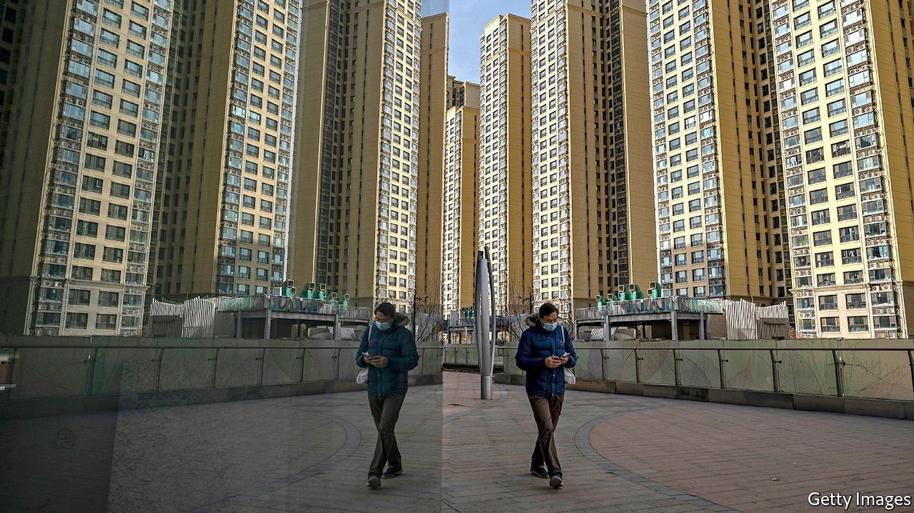
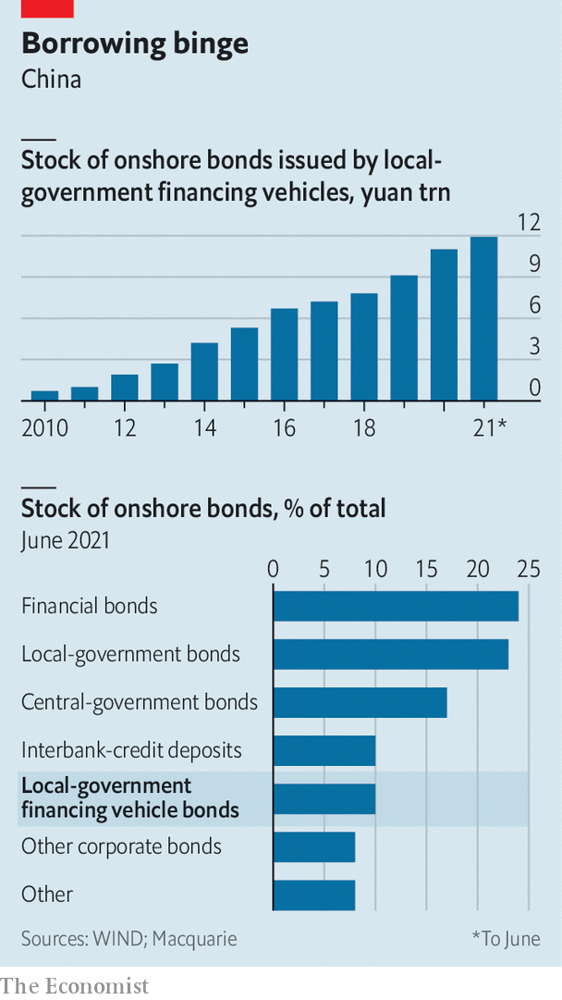

China’s property slowdown sheds light on another worrying debt problem
Local-government financing vehicles, not just developers, are saddled with lashings of debt

WHEN OFFICIALS in the southern city of Liuzhou began a routine auction of parcels of land in June, they found few takers. Only one of five plots received a bid; the rest went unsold. As in many cities across China, a downturn in the property market has meant less demand for the land on which apartment towers are built.
Listen to this story.Enjoy more audio and podcasts on iOS or Android.
Listen to this story
Save time by listening to our audio articles as you multitask
That is bad news for local governments, which rely on the sales for the bulk of their revenues. It is also a troubling sign for the holders of bonds issued by local-government financing vehicles (LGFVs), the half-public, half-corporate concoctions that have become a cornerstone of Chinese development. Cities’ land-sale revenues are often used to repay these bonds. After the auctions flopped in Liuzhou, rating agencies downgraded two of the city’s LGFVs on fears that the government would struggle to service their debts.
LGFVs are one of China’s oddest financial innovations. In the mid-1990s the central government implemented budget laws to stop local bureaucrats building up massive debts. In response, regional governments crafted LGFVs as a workaround. The vehicles, which number in the thousands, became important drivers of economic growth, helping build bridges, homes and roads. They also became one of China’s biggest kinds of liabilities, building up some 53trn yuan ($8.3trn, or 52% of GDP) in onshore and offshore debts, according to Goldman Sachs, a bank. Although such borrowing does not appear on public balance-sheets, local authorities are responsible for paying it back. The runaway debts now threaten to throw the financial system into turmoil.
The central government has spent years trying to reform China’s shadow financial system, but debts that are hidden off balance-sheets have been slow to shrink. Take shadow banking, for instance. Although it has declined as a share of banking-system assets, outstanding shadow loans remain high, at 57.6trn yuan at the end of September. Similarly, a municipal-bond market now lets cities and provinces raise funds. Yet LGFV debts at the end of 2020 still exceeded outstanding central and local government bonds combined.
Many LGFVs make meagre earnings on the bridges, roads and water systems they build. Officials used to be able to make up the shortfall with land-sale revenues, but this is becoming harder. In a round of sales this year for 22 of China’s biggest cities, the premium fetched on parcels was just 4.7% above the government’s reserve price, compared with 16.7% earlier in the year, according to Enodo Economics, a research firm. The default of Evergrande, a developer with $300bn in liabilities, and wider malaise in the property industry means demand for land could continue to suffer. New home prices fell for a third consecutive month in November, according to figures published on December 15th.
No LGFV has yet defaulted on a bond. But many market-watchers, such as Larry Hu of Macquarie, a bank, believe it is only a matter of time. The vehicles will face repayments of offshore bonds of $32.2bn in 2022, up from $26.9bn in 2021, reckons Nomura, a Japanese bank. Many of them issue short-term debt simply to pay off other maturities. Guangxi Liuzhou Dongcheng, an LGFV that was downgraded by S&P, a rating agency, in October, had 25.7bn yuan ($4bn) in short-term maturities, for instance. An average of 60% of LGFV bond issuance has gone not to new growth-generating projects but towards paying off maturing debts in 2020 and 2021.
Many local governments appear to be preparing for a financial storm. Liuzhou has used an estimated 20bn yuan in public funds to make up a capital shortfall at Dongtong Investment and Development Group, a vehicle that was downgraded in August by Fitch, another rating agency. An LGFV in the city of Chongqing defaulted on bankers’ acceptance bills in March. Subsidiaries of a provincial vehicle in Guangxi have gone bankrupt. Provincial governments in Jiangsu and Yunnan have issued guidelines calling for collapsing LGFVs to go into formal bankruptcy instead of being hidden under more debt.

Such reforms will not come easily. The value of onshore LGFV bonds stood at 11.9trn yuan in June, six times those issued by developers and a tenth of China’s onshore-bond market (see chart). A slight shift in sentiment towards the government’s implicit guarantee for LGFVs could roil markets. This was highlighted by the caution around “Document No. 15”, an internal circular issued by the banking regulator in July, which told lenders to cut access to working-capital loans for some LGFVs. If upheld, the new rules could have caused a cash crunch for the vehicles—similar to the squeeze that brought down Evergrande. But they were quickly abandoned. Letting LGFVs fail is a line the central government is not yet willing to cross.
The situation illustrates the market-distorting power of missed reforms. Many other sectors, such as property and non-core state-owned enterprises, are no longer seen as backed by the central government. The fact that the authorities did not decisively end their implicit support for LGFVs earlier this year has led many asset managers in China to consider them safe. LGFV bond yields have fallen towards those on government bonds. Funds have poured in. “They are becoming a haven,” says Mr Hu. They should be anything but. ■
For more expert analysis of the biggest stories in economics, business and markets, sign up to Money Talks, our weekly newsletter.
An early version of this article was published online on December 14th 2021